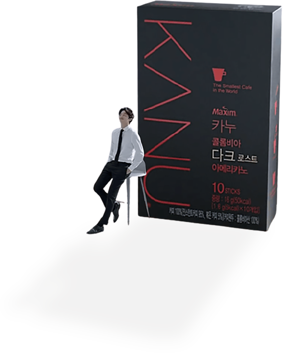

세상에서 가장 작은 카페
세상에서 가장 작은 카페
새로운 개념의 인스턴트 원두커피 카누와 함께 언제 어디서나 커피 전문점의 커피를 즐겨 보세요!
PRODUCT
아메리카노
직접 갈아넣은 원두커피와 에스프레소 추출로 얻은 고품질의 인스턴트 커피로 만들어진 깔끔하고 풍부한 아메리카노
라떼
에스프레소 방식으로 추출한 카누 커피와 신선하고 진한 우유 맛을 더하는 라떼 크리머가 만들어 내는 깊고 부드러운 맛
BRAND

신개념 인스턴트 원두커피
커피전문점수준의맛과 향을언제어디서나고편리하게 마실수있도록 탄생한 국내최초인스턴트 원두커피 KANU. 고품질 아라비카 커피에 원두 고유의 맛과향을 더해줄 마이크로 그라인딩 원두가 블렌딩되어 카누만의 깊은 풍미를 느끼실수 있습니다. 아메리카노, 라떼, 디카페인등 그날의 기분과 취향에 따라 다양한 카누를 맛있게 즐겨보세요. 세상에서가장 작은 카페, KANU.
KANU COFFEE STORY >